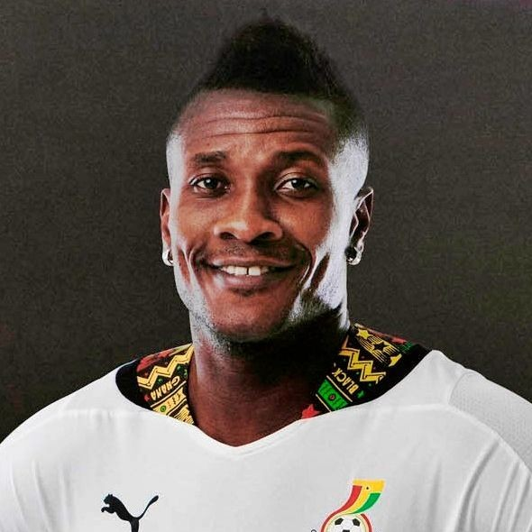
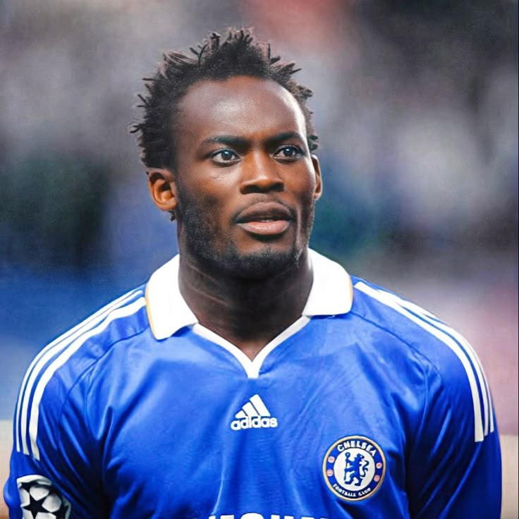
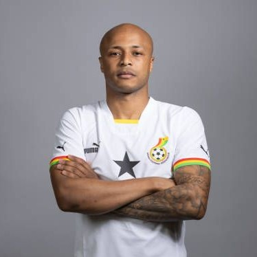
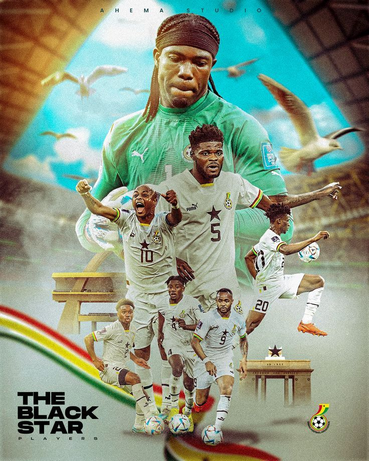
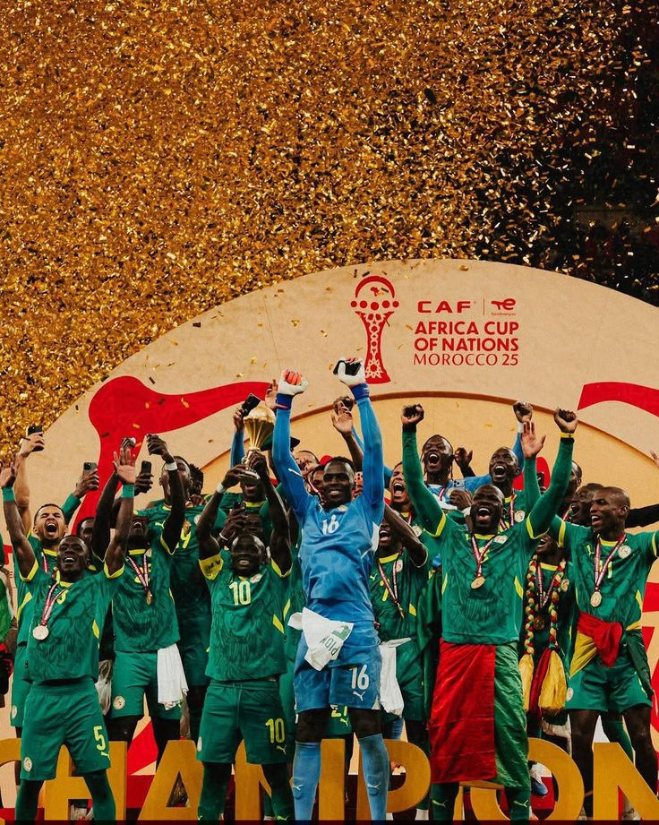
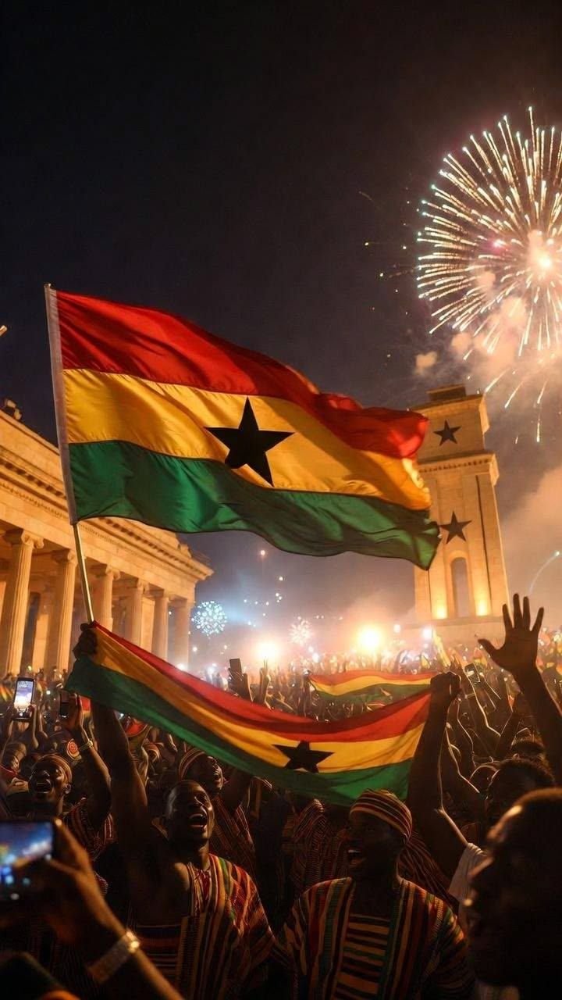
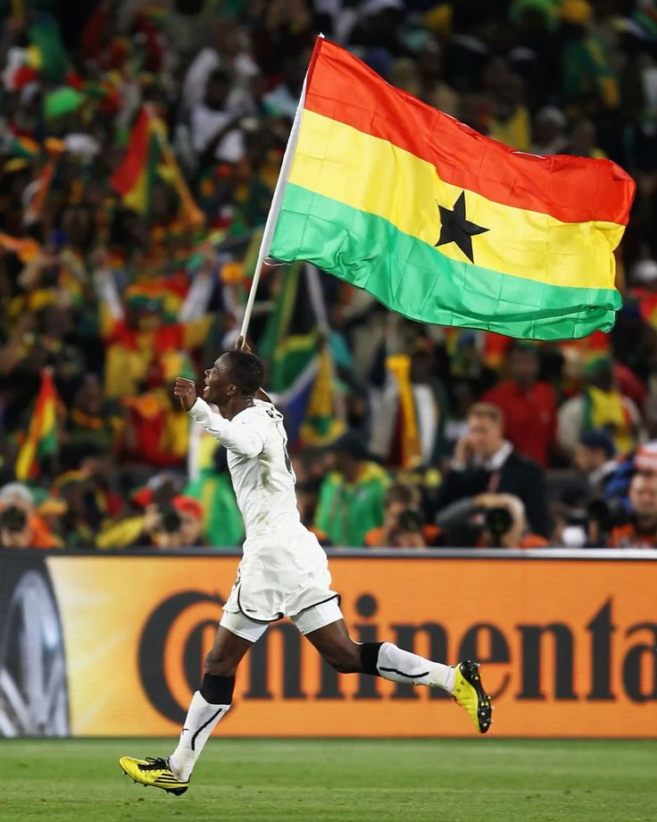

Información General
Nombre oficial: Selección Nacional de Ghana
Apodo: The Black Stars (Las Estrellas Negras)
Confederación: CAF
Federación: Ghana Football Association (GFA)
Capitán: André Ayew
Director Técnico: Otto Addo
Primera participación mundialista: 2006
Ranking FIFA: Entre las selecciones africanas más competitivas.
Historia Mundialista
► Ghana es una de las selecciones más importantes del continente africano y ha representado a África en múltiples Copas del Mundo.
► Debutó en Alemania 2006 logrando una destacada actuación al clasificar a los octavos de final en su primera participación mundialista.
► Su mejor actuación llegó en Sudáfrica 2010, cuando alcanzó los cuartos de final, convirtiéndose en una de las selecciones africanas más exitosas en la historia de los mundiales.
► En aquel torneo estuvo a pocos segundos de convertirse en la primera selección africana en alcanzar una semifinal mundialista.
📊 Estadísticas Mundialistas
| Estadística | Dato |
|---|---|
| Participaciones | 4 |
| Títulos Mundiales | 0 |
| Mejor Resultado | Cuartos de Final (2010) |
| Última Participación | 2022 |
| Continente | África |
| Confederación | CAF |
⭐ Jugadores Históricos

Asamoah Gyan
Máximo goleador histórico de Ghana y figura mundialista.

Michael Essien
Leyenda africana y referente del mediocampo ghanés.

André Ayew
Capitán histórico y uno de los jugadores más importantes de Ghana.
🏆 Participaciones Mundialistas
2006 • 2010 ⭐ • 2014 • 2022
🤔 Curiosidades
- ⚽ Ghana fue la tercera selección africana en alcanzar unos cuartos de final mundialistas.
- ⚽ Es conocida mundialmente como "Las Estrellas Negras".
- ⚽ Asamoah Gyan es uno de los máximos goleadores africanos en la historia de los Mundiales.
- ⚽ Ghana ha ganado varias veces la Copa Africana de Naciones.
- ⚽ Es considerada una de las potencias históricas del fútbol africano.
🖼️ Galería de Imágenes



